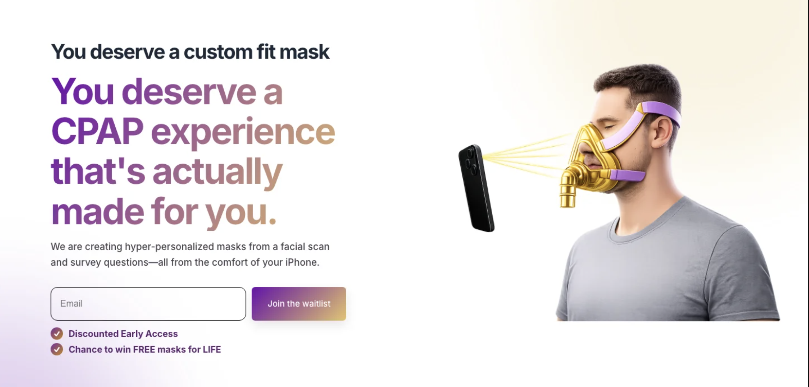
Extremely early prototypes
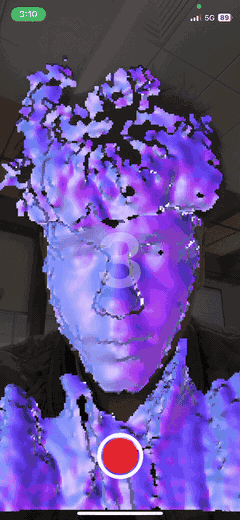
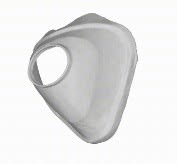
Healthtech · Custom CPAP
DreamSeal
An end-to-end custom CPAP experience that turns an iPhone facial scan and sleep preferences into personalized mask options.
- Swift
- FastAPI
- Apple Vision
- Open3D
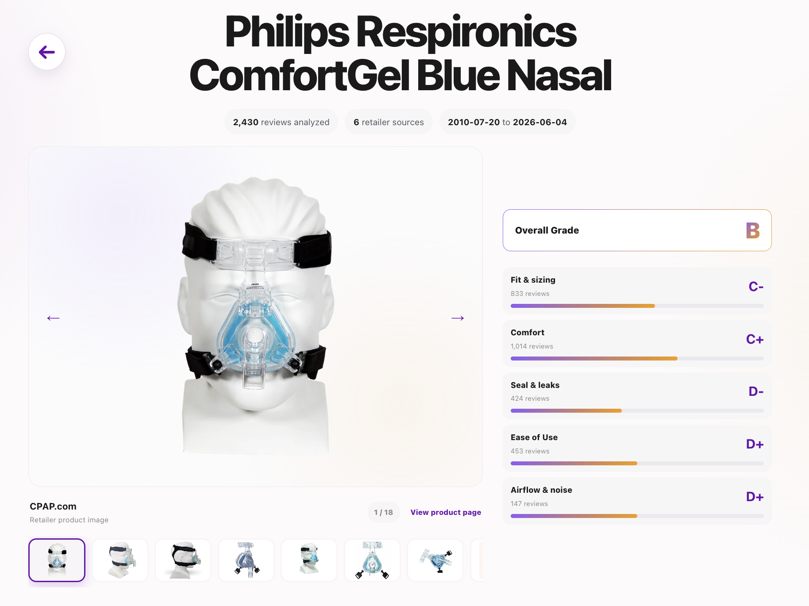
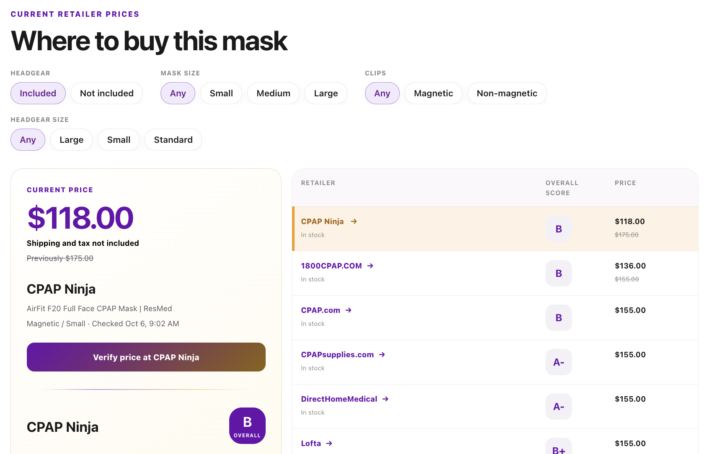
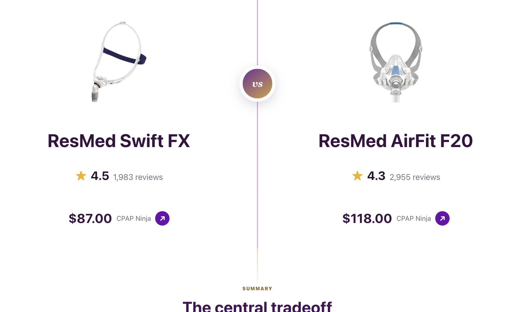
Health Data · Comparison Engine
The CPAP Library
A searchable comparison engine that turns product data and user reviews into clear mask grades for fit, comfort, seal, and durability.
- Angular
- Python
- SQLite
- Playwright
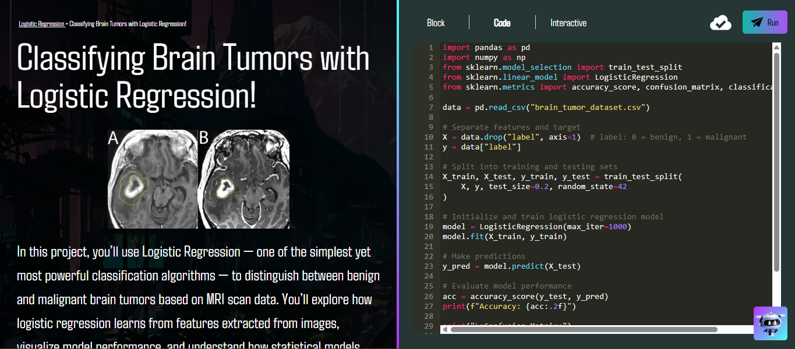
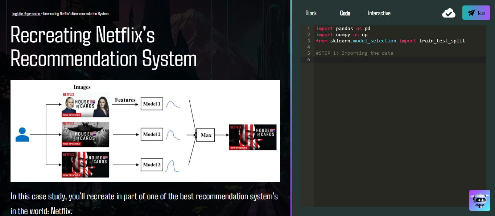
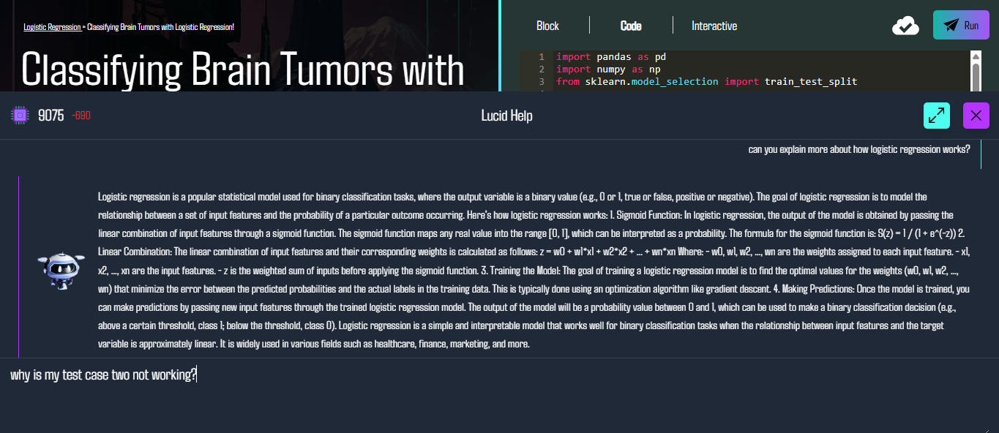
Education · Applied AI
CyberpolisAI
An interactive learning platform where students build real-world machine-learning projects through guided lessons and hands-on modules.
- Angular
- Spring Boot
- Docker
- PyTorch
- AWS
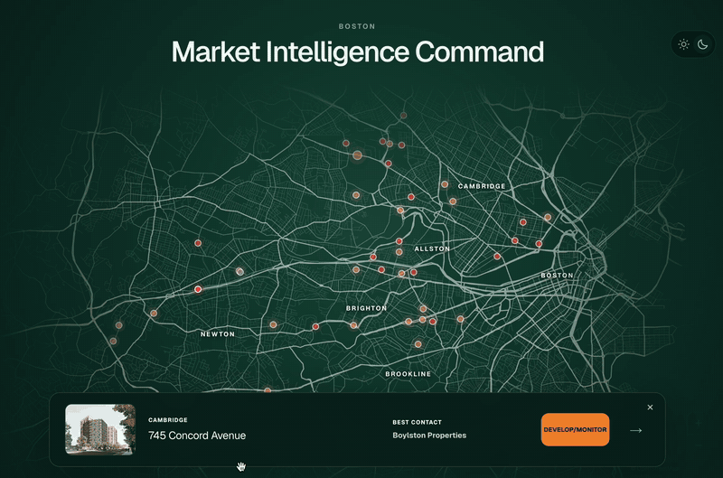
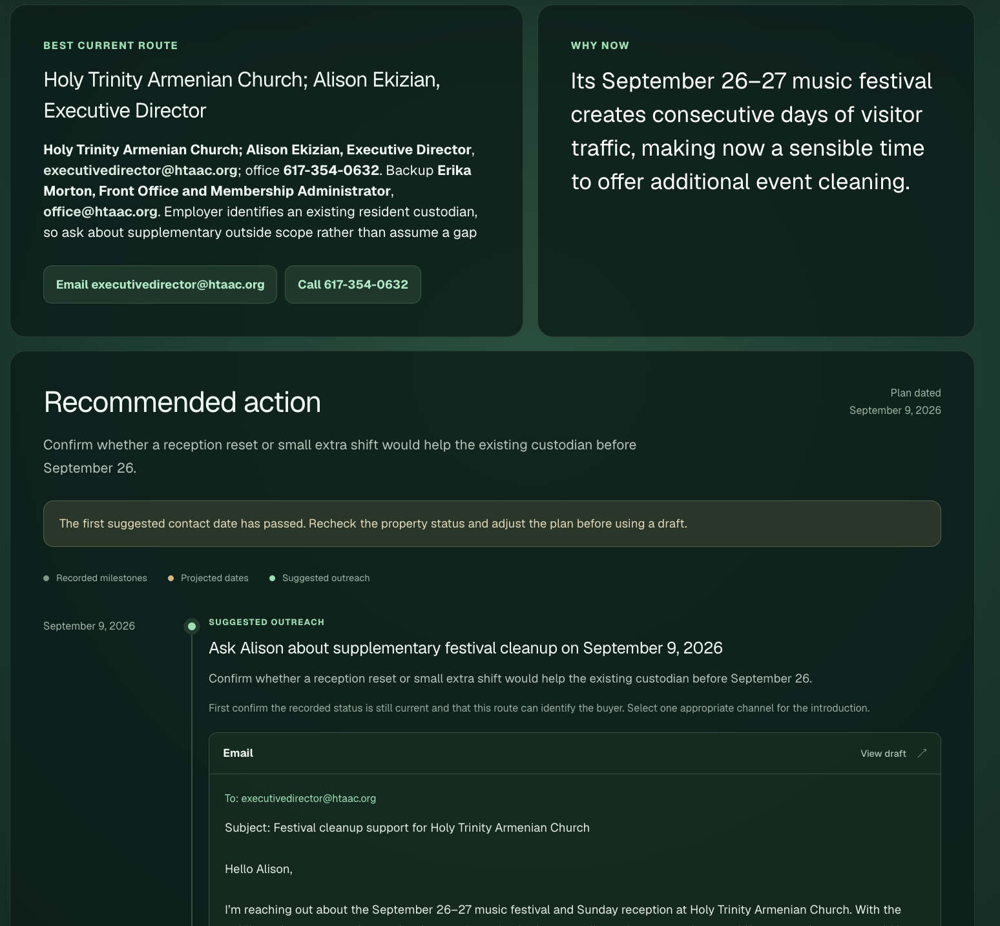
B2B · Property Intelligence
Janitorial Sales Intelligence
A property-level system that maps Greater Boston opportunities, identifies likely buyers, ranks leads, and prepares targeted outreach.
- Next.js 16
- FastAPI
- OpenAI Responses API
- Cloudflare
- Exa
- Serper
Humaid Jaffery
University of Washington ’28
Computer Science